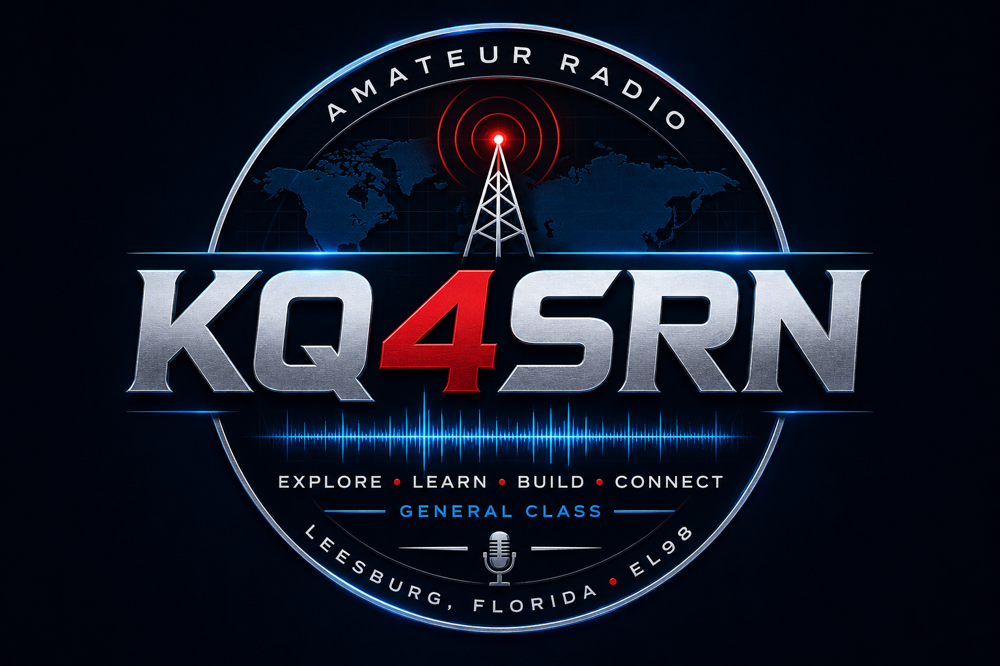

Callsign
KQ4SRN
FCC-issued amateur radio callsign.
Meet the Operator
General Class amateur radio operator based in Leesburg, Florida.

My Amateur Radio Journey
Welcome to KQ4SRN Radio Command. I am a General Class amateur radio operator located in Leesburg, Florida.
My interest in amateur radio includes HF voice, digital modes, software-defined radio, antennas, emergency communications, satellites, CW, and radio-related technology projects.
I enjoy experimenting with different antenna configurations, improving my station, learning new operating techniques, and connecting with other operators around the country and the world.
This website documents my station, projects, operating experiences, equipment, and lessons learned along the way.
Operator Profile
Callsign
FCC-issued amateur radio callsign.
License
Licensed for expanded HF operating privileges.
Location
Operating from Central Florida.
Club
Active with the Lake Amateur Radio Association.
Operating Interests
Voice contacts, digital modes, propagation, DX, and improving coverage on 40 and 80 meters.
FT8, digital communications, logging, signal analysis, and computer-assisted radio.
Software-defined radio, public-safety monitoring, spectrum exploration, and signal decoding.
End-fed wires, portable verticals, Buddipole configurations, loops, and stealth installations.
EmComm skills, field operations, portable systems, and preparation for future MARS participation.
Raspberry Pi, AllStar, HamClock, radio dashboards, and other station automation projects.